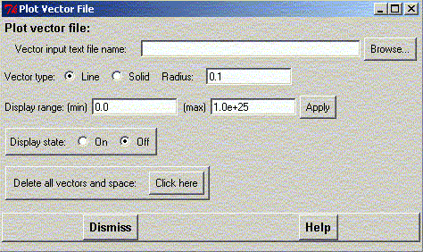

********************************************************************
Plot vector file widget
Leif Laaksonen CSC 2001
********************************************************************
It is possible to plot vectors from a flat text file using this widget. Give first the name of the text file containg the vector data. It can come from a GaussianXX calculation or from an other program.
There are two different display styles available:
The vector display mode can be "On" or "Off".
If you don't need the display anymore free all the reserved vector space by clicking on the "Delete all vector and space" button.
Line command: plot command
********************************************************************
LUL/2001
********************************************************************